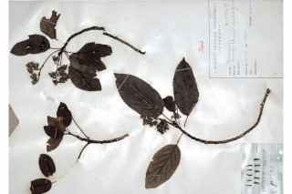
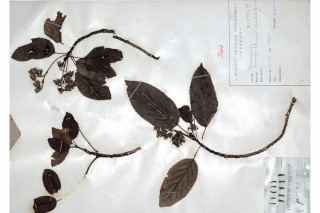
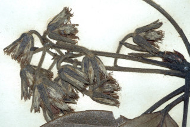
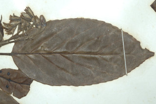
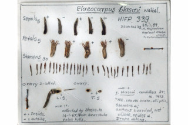
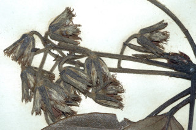
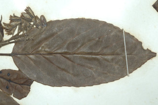
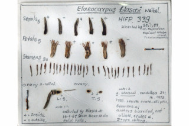

Trees up to 20 m tall.
20 ಮೀ. ಎತ್ತರದವರೆವಿಗೆ ಬೆಳೆಯುವ ಮರಗಳು
20 മീറ്റര്വരെ ഉയരമുള്ള മരങ്ങള്.
மரம் 20 மீ. உயரம் வரை வளரக்கூடியது
Young branchlets short grey silky hairy, with fallen leaf scars.
ಎಳೆ ಕಿರುಕೊಂಬೆಗಳು ಬೂದು ಬಣ್ಣದ ಸಣ್ಣ ರೇಷ್ಮೆಯಂತಹ ರೋಮಗಳನ್ನು ಹೊಂದಿರುತ್ತವೆ ಹಾಗೂ ಎಲೆಯುದುರಿದ ಗುರುತು ಸಮೇತವಿರುತ್ತವೆ.
ഇളകി വീണ ഇലയടയാളങ്ങളുള്ള, ചാരനിറത്തിലുള്ള, കുറ്റി സില്ക്ക് രോമങ്ങള് നിറഞ്ഞ ഇളം ഉപശാഖകള്.
சிறுநுனிக்கிளைகளில் சிறிய சாம்பல் நிறமான மென்மையான உரோமங்களுடையது, மற்றும் இலைகள் விழுந்ததால் ஏற்படும் தழும்பு காணப்படும்
Leaves simple, alternate, spiral, clustered at twig ends; stipules caducous; petioles 1.5-2.5 cm long, canaliculate, sparsely adpressed hairy; lamina 6-9.5 x 3-4.5 cm, elliptic or elliptic-ovate, apex acute to shortly acuminate with blunt tip, base rounded, margin shallowly serrate, glabrous; midrib slightly raised above; secondary_nerves ca.7 pairs, branched with domatia in the axils beneath; tertiary_nerves reticulo-percurrent.
ಎಲೆಗಳು ಸರಳವಾಗಿದ್ದು,ಪರ್ಯಾಯ ಮತ್ತು ಸುತ್ತು ಜೋಡನಾ ಮಾದರಿಯಲ್ಲಿದ್ದು ಕುಡಿಕೊಂಬೆಗಳ ತುದಿಯಲ್ಲಿ ಗುಂಪಾಗಿರುತ್ತವೆ;ಕಾವಿನೆಲೆಗಳು ಉದುರಿ ಹೋಗುವಂತಹವು;ತೊಟ್ಟುಗಳು 1.5 – 2.5 ಸೆಂ.ಮೀ. ಉದ್ದವಿದ್ದು, ಕಾಲುವೆಗೆರೆ ಸಮೇತವಿದ್ದು ವಿರಳವಾದ ಅಪ್ಪು-ರೋಮಗಳಿಂದ ಕೂಡಿರುತ್ತವೆ;ಪತ್ರಗಳು 6 – 9.5 X 3 – 4.5 ಸೆಂ ಮೀ. ಗಾತ್ರ, ಅಂಡವೃತ್ತ ಅಥವಾ ಅಂಡವೃತ್ತ-ಅಂಡಾಕಾರ ಮಾದರಿಯ ಆಕಾರ,ಚೂಪಾದುದರಿಂದ ಹಿಡಿದು ಕಿರಿದಾದ ಹಾಗೂ ಮೊಂಡು-ಅಗ್ರವುಳ್ಳ ಕ್ರಮೇಣ ಚೂಪಾಗುವ ತುದಿ, ದುಂಡಾದ ಬುಡ,ಆಳವಾದ ದಂತಗಳನ್ನು ಹೊಂದಿಲ್ಲದ ಗರಗಸ ದಂತಿತ ರೀತಿಯ ಅಂಚು ಹೊಂದಿದ್ದು ರೋಮರಹಿತವಾಗಿರುತ್ತವೆ; ಮಧ್ಯ ನಾಳ ಪತ್ರದ ಮೇಲ್ಭಾಗದಲ್ಲಿ ಸ್ವಲ್ಪ ಮಟ್ಟಿಗೆ ಉಬ್ಬಿರುತ್ತದೆ; ಎರಡನೇ ದರ್ಜೆಯ ನಾಳಗಳು ಅಂದಾಜು 7 ಕವಲೊಡೆದ ಜೋಡಿಗಳಿದ್ದು ಪತ್ರದ ತಳಬಾಗದ ಅಕ್ಷಾಕಂಕುಳಿನಲ್ಲಿ ಸಹಜೀವಿ ಗೂಡುಗಳ ಸಮೇತವಿರುತ್ತವೆ; ಮೂರನೇ ದರ್ಜೆಯ ನಾಳಗಳು ಜಾಲಬಂಧ ನಾಳ ವಿನ್ಯಾಸದಲ್ಲಿದ್ದು ಎಲೆದಿಂಡಿಗೆ ಅಡ್ಡವಾಗಿ ಕೂಡುವಂತವು.
ലഘുവായ ഇലകള്, ഏകാന്തരക്രമത്തില്, സര്പ്പിളമായി തണ്ടിന്റെ അറ്റത്ത് കൂട്ടമായി അടുക്കിയ വിധത്തിലാണ്; എളുപ്പം കൊഴിഞ്ഞ് പോകുന്ന അനുപര്ണ്ണങ്ങള്; ചാലുള്ളതും ചെറുതായി, അടങ്ങിയ രോമങ്ങളുള്ളതുമായ ഇലഞെട്ടിന് നീളം 1.5 സെ.മീ. മുതല് 2.5 സെ.മീ. വരെയാണ്; പത്രഫലകത്തിന് 6 സെ.മീ. മുതല് 9.5 സെ.മീ. വരെ നീളവും 3 സെ.മീ. മുതല് 4.5 സെ.മീ. വരെ വീതിയും, ആകൃതി ദീര്ഘ വൃത്തം തൊട്ട് ദീര്ഘവൃത്തീയ-അണ്ഡാകാരം വരെയാകാം, പത്രാഗ്രം നിശിതം തൊട്ട് മുനപ്പില്ലാത്ത ചെറു ദീര്ഘാഗ്രം വരെയാകാം, പത്രാധാരം വൃത്താകാരത്തിലാണ്, അരികുകള് ആഴം കുറഞ്ഞ ദന്തുരമാണ്, അരോമിലം; മുഖ്യസിര മുകളില് അല്പ്പം ഉയര്ന്നതാണ്; കക്ഷങ്ങളില് ഡോമേഷ്യയുള്ള, ശാഖിതമായ ഏതാണ്ട് 7 ജോഡി ദ്വിതീയ ഞരമ്പുകള്; ത്രിതീയ ഞരമ്പുകള് ജാലിത-പെര്കറന്റ് വിധത്തിലാണ്.
இலைகள் தனித்தவை, மாற்றுஅடுக்கமானவை, சிறுகிளைகளின் நுனியில் இலைகள் கூட்டமாக மற்றும் நெருக்கமாக காணப்படும்; இலையடிச்செதில் உதிரக்கூடியது; இலைக்காம்பு 1.5-2.5 செ.மீ. நீளமானது, குறுக்குவெட்டுத் தோற்றத்தில் கேனாலிகுலேட்; பரவலான உரோமங்களுடையது; இலை அலகு 6-9.5 X 3-4.5 செ.மீ., நீள்வட்டம் அல்லது நீள்வட்டம்-முட்டை வடிவம், அலகின் நுனி கூர்மையானது முதல் சிறிய வால் போன்று நீண்டு மழுங்கிய முனை உடையது, அலகின் தளம் வட்டமானது, அலகின் விளிம்பு ரம்ப பற்களுடையது, உரோமங்களற்றது; மையநரம்பு மேற்புறத்தில் அலகின் பரப்பைவிட சற்றே உயர்ந்து இருக்கும்; இரண்டாம் நிலை நரம்புகள் தோராயமாக 7 ஜோடிகள், நரம்புகள் கிளைத்தது, கீழ்பரப்பில் நரம்புகள் சந்திக்கும் இடத்தின் டொமேஸ்சியா காணப்படும்; மூன்றாம் நிலை நரம்புகள் வலைப்பின்னல் கொண்ட பெர்க்கரண்ட்.
Inflorescence axillary racemes, 4-6 cm long, sericeous, 6-7 flowered; flowers white, pedicels 1-1.2 cm long; anthers bearded, not ciliate.
ಪುಷ್ಪಮಂಜರಿಗಳು 4-6 ಸೆಂ.ಮೀ ಉದ್ದವಿದ್ದು 6 ರಿಂದ 7 ಹೂಗಳುಳ್ಳ , ರೇಷ್ಮೆಯಂತಹ ನಯವಾದ ಹಾಗೂ ಹೊಳಪುಳ್ಳ ಮೇಲ್ಮೈ ಹೊಂದಿದ ಅಕ್ಷಾಕಂಕುಳಿನಲ್ಲಿರುವ ಮದ್ಯಾಭಿಸರ ಮಾದರಿಯವು;ಹೂಗಳು ಬಿಳಿ ಬಣ್ಣ ಹೊಂದಿದ್ದು, 1- 1.2ಸೆಂ ಮೀ.ಉದ್ದದ ತೊಟ್ಟು ಸಮೇತವಾಗಿರುತ್ತವೆ;ಪರಾಗ ಕೋಶ ದಾಡಿ ಸಮೇತವಿರುತ್ತದೆ; ಆದರೆ ಸ್ಪಂದನಾಶೀಲ ರೋಮಗಳನ್ನು ಹೊಂದಿರುವುದಿಲ್ಲ.
പൂങ്കുലകള്, 6 ഓ 7 ഓ പൂക്കളുള്ള, സെറീഷ്യസ് രോമിലമായ, 4 സെ.മീ. മുതല് 6 സെ.മീ വരെ നീളമുള്ള റസീം കക്ഷീയ പൂങ്കുലകളാണ്; 1 സെ.മീ. മുതല് 1.2 സെ.മീ. വരെ നീളമുള്ള തണ്ടുള്ള, വെളുത്ത പൂക്കള്. സീലിയ ഇല്ലാത്തതും, രോമിലമായ കേസരങ്ങളുള്ളതുമാണ്.
மஞ்சரி இலைக்கோணங்களில் காணப்படும் ரெசீம், 4-6 செ.மீ. நீளமானது, நுண்ணிய உரோமங்களுடையது, 6-7 மலர்கள் கொண்டது; மலர்கள் வெள்ளை நிறம், மலர்காம்பு 1-1.2 செ.மீ. நீளமானது, மகரந்த பை தாடி போன்ற நீட்சியுடையது, உரோமங்களற்றது.
Drupes, ellipsoid, 1.5 cm long, 1-seeded.
ಡ್ರೂಪ್ಗಳು ಚತುರಸ್ರಾಕಾರದಲ್ಲಿದ್ದು 1.5 ಸೆಂ.ಮೀ. ಉದ್ದ ಹೊಂದಿದ್ದು ಒಂದು ಬೀಜವನ್ನೊಳಗೊಂಡಿರುತ್ತವೆ.
ഒറ്റവിത്തുള്ള കായ, 1.5 സെ.മീ. നീളമുള്ള, ദീര്ഘഗോളാകാര ഡ്രൂപ്പ് ആണ്.
உள்ளோட்டுத்தசைகனி (ட்ரூப்), நீள்வட்டமானது, 1.5 செ.மீ. நீளமானது, ஒரு விதை கொண்டது.
 

 




